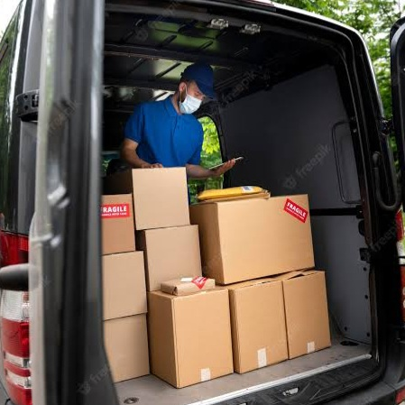

Estação de Metarreciclagem
A Estação de Metarreciclagem é um projeto que promove a capacitação técnica em informática para jovens, adultos e idosos, o reuso de computadores doados a programas de inclusão digital e a destinação correta do lixo eletrónico.
O projeto é uma iniciativa da ONG PROGRAMANDO O FUTURO e o MINISTÉRIO DA CIÊNCIA, TECNOLOGIA, INOVAÇÕES e COMUNICAÇÕES. Está localizado em Valparaíso de Goiás e é reconhecida como tecnologia social por sua capacidade de inclusão social e melhoria na vida das pessoas.
Com o dominio completo da metodologia de Metarreciclagem a Programando o Futuro desenvolve as seguintes ações
- Reuso de equipamentos
- Rede de Coleta
- Reciclagem de lixo eletrônico
- Catalogação e rastreabilidade
- Destruição de dados.